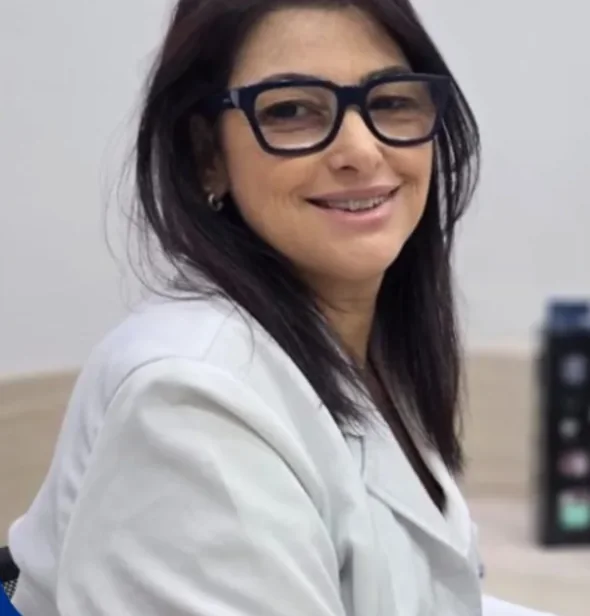

Consulta de clínica geral
Avaliação da sua saúde, conversa sobre sintomas e queixas, exame clínico e orientação do tratamento.
Atendimento humanizado e atenção a cada detalhe, para quem busca prevenção, qualidade de vida e cuidado de verdade.
Olhar para a sua saúde como um todo, não só para o sintoma de hoje.
Explicação clara do que está acontecendo e do próximo passo.
Uma médica para acompanhar você de perto, consulta após consulta.

A Dra. Erika Gomes é médica clínica geral. É ela quem faz a primeira avaliação do seu estado de saúde, identifica possíveis problemas e orienta o melhor tratamento ou o encaminhamento certo para um especialista.
O atendimento é humanizado, sem pressa e com atenção a cada detalhe: a consulta é o momento de ouvir a sua história, entender a sua rotina e cuidar de você como pessoa, não só como um diagnóstico.
Não espere os sintomas aparecerem para buscar ajuda. A prevenção é sempre o melhor caminho.
Avaliação da sua saúde, conversa sobre sintomas e queixas, exame clínico e orientação do tratamento.
Exames de rotina e acompanhamento para descobrir cedo o que pode ser tratado com mais tranquilidade.
Leitura e explicação dos seus resultados, sem termos difíceis, com o que fazer a seguir.
Cuidado de longo prazo para condições como pressão alta, diabetes e colesterol, com retornos programados.
Dor de cabeça frequente, cansaço, alterações na urina, queda de cabelo: sinais que merecem investigação.
Quando o caso pede um especialista, você sai sabendo qual procurar e por quê.
Simples, sem burocracia. Você fala direto com a Dra. Erika pelo WhatsApp.
Chame no WhatsApp e escolha o melhor dia e horário.
Sua história, rotina, sintomas e o que você já fez até aqui.
Avaliação completa e, se preciso, pedido de exames.
Orientação clara, tratamento ou encaminhamento, e o retorno combinado.
Atenção: não ignore sintomas persistentes. Cuide do seu corpo, ele fala com você o tempo todo.
Mudanças na cor, odor forte ou dificuldade para urinar podem indicar que algo não vai bem, de desidratação a infecções urinárias ou renais.
Muitas vezes ligada a fatores simples, como visão ou estresse. Mas, quando é recorrente ou intensa, merece avaliação médica.
Podem estar ligadas à falta de vitaminas e minerais ou a alterações hormonais, como problemas na tireoide.
Conteúdo informativo. Só uma consulta médica avalia o seu caso.
O Índice de Massa Corporal é só um ponto de partida: ele não avalia músculo, gordura ou a sua saúde como um todo. Use como referência e converse com a médica.
★★★★★“Excelente médica! Super indico! Sucesso, Dra., continue com seu trabalho de excelência e humanizado!”
@dra.erikagomes Siga para dicas de saúde no Instagram★★★★★“Excelente médica, muito atenciosa e dedicada!”
Não achou a sua pergunta? Chame no WhatsApp.
Sempre que precisar de uma primeira avaliação: sintomas novos ou que não passam, check-up de rotina, exames para entender, ou quando você não sabe qual especialista procurar.
Sim, a Dra. Erika atende de forma particular. Valores e formas de pagamento são informados no agendamento pelo WhatsApp.
Se você tiver exames recentes, leve. Também ajuda levar a lista dos remédios que usa. Se não tiver nada, tudo bem: a consulta começa do zero.
Sim. Se for preciso investigar melhor, ela solicita os exames. E, se o caso pedir, encaminha para o especialista certo.
Pelo WhatsApp (32) 98707-5400. É só mandar uma mensagem com o seu nome e o melhor período para você.
Fale direto com a Dra. Erika e escolha o melhor horário para você.